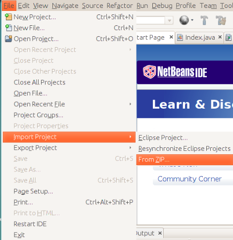

GUIA DE UTILIZAÇÃO
Área desiganada ao manual de utilização do sistema para o utilizador.
Primeiros Passos
1. Instalação de um IDE
Aconselhamos devidamente o NeatBeans 8.2 que suporta JAVA EE (download através deste link
2. Adquirir o GlashFish Server 4.1.1
Garantir que durante a instalação do IDE, este instala paralelamente o GlashFish Server. Caso contrário, faça o respetivo download de modo a assegurar que o IDE o reconhece.
3. Fazer o import do projeto para o IDE
É necessário importar o projeto para o IDE para que este corra sem qualquer tipo de erros.

4. Correr o ficheiro index.jsf